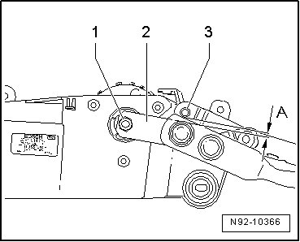

Windshield Wiper Motor, Installing In Wiper Frame
Windshield Wiper System
Windshield Wiper Motor, Installing in Wiper Frame
• If a linkage with part number 7L0.955.601.B/ 602.B or higher is installed on a Touareg through MY 2007, the plenum chamber cover must be cut before installing --> [ Wiper Frame with Linkage, through 22.07 ]. Wiper Frame With Linkage, Through 22.07
- Insert Windshield Wiper Motor (V) into wiper frame and secure it with mounting bolts - arrows -.

- Tighten the threaded connections to the specification given in the assembly overview --> [ Windshield Wiper System Assembly Overview ] Windshield Wiper System Assembly Overview.
- Let Windshield Wiper Motor (V) run to rest position, to do so, connect connector to Windshield Wiper Motor (V) and operate windshield wiper switch briefly to do so.
• Hood (Front Hood Switch (F266)) must be closed to activate windshield wiper functions.
- Place crank - 2 - onto shaft of Windshield Wiper Motor (V), the distance - A - between crank - 2 - and pin - 3 - must be 0.16 in.
- Thread on crank - 2 - with hex nut - 1 -.

- Tighten the hex nut - 1 - to the specification given in the assembly overview --> [ Windshield Wiper System Assembly Overview ] Windshield Wiper System Assembly Overview.
CAUTION!
• When connecting battery, always perform work procedure as described in repair information --> [ Battery, One-Battery Layout, Disconnecting and Connecting ] Battery, One-Battery Layout, Disconnecting and Connecting. Not adhering to sequence will result in the deactivation of Main Battery Switch -E74- and subsequent damage to electrical system components.
• Observe notes for threaded connections of battery terminals --> [ Battery Post/Terminal ] Battery Post/Terminal.
- Reconnect battery --> [ Battery, One-Battery Layout, Disconnecting and Connecting ] Battery, One-Battery Layout, Disconnecting and Connecting.
• If Control Module for wiper motor (J400) or Windshield Wiper Motor (V) is replaced, Control Module for wiper motor (J400) must be coded --> [ Wiper Motor Control Module, Coding ] Testing and Inspection.